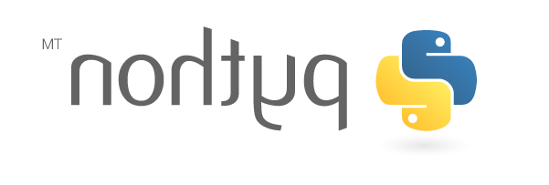

Projets
Le programme officiel de l'enseignement de spécialité nsi précise que :
"Une part de l’horaire de l’enseignement d’au moins un quart du total en classe de première doit être réservée à la conception et à l’élaboration de projets conduits par des groupes de deux à quatre élèves. Les projets réalisés par les élèves, sous la conduite du professeur, constituent un apprentissage fondamental tant pour la compréhension de l’informatique que pour l’acquisition de compétences."
Note
- Un travail régulier et des efforts soutenus sont attendus sur la réalisation des projets.
- Un point sur l'avancé du projet sera fait à intervalles réguliers.
- Les projets donnent lieu à une restitution sous forme de présentation orale devant la classe.
Projet de la première période
Projet 1 : Programmer un jeu avec une interface graphique
Descriptif
Le but du projet est de programmer un jeu en Python avec une interface graphique. On privilégiera l'utilisation du module turtle de Python pour l'interface graphique. Les autres possibilités (notamment les modules pygames ou tkinter) sont déconseillées pour le moment. Les interactions avec le joueur se feront de façon préférentielle via la saisie de chaîne de caractères (textinput de turtle). Les élèves les plus avancés pourront utiliser la gestion d'événements dans la fenêtre turtle (onclick, onkeypress, ...). On peut s'inspirer du jeu du pendu crée en classe avec l'aide du professeur, mais il faut proposer un jeu différent. Par exemples : Jeu de Nim,Puissance4, Quizz, Morpion, Bataille navales, Pong, Snake, Casse-brique, ...
Critères de réussite
Attention
Les critères de réussite et les exemples sont donnés pour le jeu de la bataille navale, ils seront adaptés si un autre jeu est proposé.
- [2 pts] Faire des recherches sur le jeu, en avoir compris les règles et savoir les présenter. Par exemple pour un jeu de bataille, navales la taille de la grille de jeu, le nombre de bateaux de chaque joueur et leurs tailles.
- [4 pts] Savoir tracer les différents écrans de jeu. Par exemple pour un jeu de bataille navale, le dessin de la grille de jeu et les bateaux.
- [4 pts] Vérifier qu'un coup proposé par le joueur est valide, modifier le contenu du plateau de jeu en conséquence. Par exemple, pour un jeu de bataille de navale, vérifier que le joueur n'a pas joué en dehors des limites de la grille puis modifier le plateau de jeu en conséquence.
- [4 pts] Intégrer la possibilité de sauvegarder une partie en cours. Il faut donc décider d'une représentation sous forme de fichier texte d'une partie et savoir interagir avec ce fichier.
- [6 pts] Intégrer la possibilité de jouer contre l'ordinateur en programmant une stratégie pour lui. La plus simple pour l'ordinateur au début est de jouer au hasard. On pourra affiner cette stratégie pour ensuite jouer sur les cases adjacentes lorsqu'on touche un bateau
- [Bonus] Rajouter des options aux jeu (chronomètre, couleurs, aspect graphique du plateau, sons, ...).
Projet 2 : Découverte de la cryptographie
Descriptif
la cryptographie est une des applications majeures de l'informatique. Le but de projet est de réaliser un programme permettant de coder et de décoder un texte à l'aide du code de César, l'une des plus anciens (et des plus simples) méthode de cryptage. Le code de César peut être cassé par analyse fréquentielle ou par force brute, on programmera donc aussi un décodage automatique du code de César en utilisant ces techniques. Une autre partie du projet est consacré au chiffrement de Vigenère.
Critères de réussite
- [4pts] Comprendre le code de César et la méthode pour le décrypter. On pourra faire ses propres recherches ou consulter la vidéo suivante (en anglais, mais les sous-titres français sont disponibles):
Préparer une explication orale de la méthode de cryptage ainsi que le la technique de décryptage, inclure des exemples. Expliquer comment ce code peut être cassé.
- [4 pts] Réaliser un programme permettant à un utilisateur de crypter ou de décrypter un texte avec la clé de son choix. Pour simplifier, on suppose que le texte est constitué uniquement de lettres majuscules non accentuées. Afin de vous aider, on donne la fonction
crypte_caractereci-dessous . Attention, cette fonction reste à compléter et ne fonctionne pas en l'état.
def crypte_caractere(caractere,cle):
#recuperation du code ascii du caractere (voir la fonction ord de Python)
code_caractere=---(---------)
#decalage de cle emplacement
code_caractere = code_caractere + ---
#on prevoit le cas ou le code depasse celui de Z
if code_caractere > -------:
code_caractere=code_caractere ---------
# recuperation du caractere a partir du code > voir la fonction chr de Python
crypte = ---(code_caractere)
return crypte
-
[4 pts] Faire un programme qui décode automatiquement un texte crypté par la méthode de César grâce à une analyse fréquentielle. Tester votre programme sur l'exemple suivant :
-
[4 pts] Faire des recherches sur le livre la disparation (G. Perec), extraire une phrase de ce livre et la coder. Votre programme fonctionne-t-il pour décoder cette phrase par analyse fréquentielle ? Expliquer. Faire un programme permettant de décrypter un code de César en utilisant une attaque par force brute (c'est à dire en testant toutes les possibilités de clés de cryptages).
-
[4 pts] Faire des recherches sur le codage de Vigenère, expliquer son fonctionnement, détailler un exemple de codage avec cette méthode. Ce code résiste-t-il à une approche par analyse fréquentielle ? Justifier.
-
[Bonus] Proposer un programme Python permettant de coder et de décoder un texte avec la méthode de chiffrement de Vigenère.
Projet 3 : Manipulation d'images avec Python
Descriptif
La bibliothèque pil pour Python Imaging Library est une célèbre librairie python permettant de modifier et de créer des images sous de nombreux formats. Vous pouvez télécharger ci-dessous, un notebook permettant de découvrir cette librairie : Notebook découverte de PIL Le but de ce projet est d'utiliser cette librairie afin de créer des filtres applicables sur n'importe quel image (par exemple un flou ou une pixellisation). Dans un premier temps on se familiarisera avec les fonctionnalités de la librairie en produisant des images à l'aide de PIL.
Critère de réussite :
- [8pts] Prise en main de la libraire à l'aide du notebook. Lire et comprendre le notebook d'introduction à pil. Réussir les exercices qui figurent dans le notebook. En particulier, il faut avoir réussi en s'inspirant de l'exemple du drapeau de la France donné dans le notebook à créer à l'aide de pil une image du drapeau de la suède en respectant les couleurs et les proportions.
-
[6pts] Ecrire et tester une fonction Python permettant à l'aide de pil de créer un "miroir" d'une image. Attention, il ne s'agit pas d'une rotation d'image. A titre d'exemple ci-dessous une image et son "miroir" en dessous, on ne doit pas utiliser une fonction qui existe déjà dans pil on doit créer le "miroir" simplement en manipulant les pixels de l'image de départ.


-
[6pts] Réalisation d'un filtre sur image. Créer et tester le filtre sous la forme d'une fonction Python applicable à une image. Par exemple un filtre de pixellisation, voir par exemple : le filtre de pixellisation ou encore un filtre de flou ou de contour d'une image. Attention, il ne faut pas utiliser un filtre déjà existant dans pil, le but est d'en créer un en utilisant exclusivement les fonctions de manipulation de pixels.
Projet 4 : Code barres (code 128)
Descriptif :
Le but du projet est la réalisation d'un programme Python permettant de créer des codes barres au format code 128. Le module turtle sera utilisé pour produire les images des codes générés.
Critères de réussite
- [4 pts] Faire ses propres recherches ou consulter les sites suivants pour découvrir le principe des codes barres :
On pourra aussi regarder la vidéo suivante sur l'histoire de l'invention des codes barres :
-
[12 pts] Ecrire un programme python utilisant le module
turtlepermettant de saisir un texte (en utilisanttextinput) puis de dessiner le code barre correspondant au format code 128. Il faudra donc s'assurer que le texte saisi ne contient pas de caractères non représentables avec ce code. -
[4 pts] Inclure la possibilité de sauvegarder l'image du code barre crée dans un fichier image.Proposer des améliorations au programme (couleur du code, dimension de l'image, ...)
Projet 5 : Projet libre
Descriptif
Projet libre au choix de l'élève mais soumis à la validation préalable de l'enseignant.
Critères de réussite
Les critères de réussites seront établis avec les élèves en fonction du projet choisi.
Projet de la seconde période
Projet 1 : Plus loin avec le traitement de données en tables
Descriptif
Le but du projet est de reprendre cet exerice relatif au traitement de données pour en poursuivre l'exploitation des données qui s'y trouve et produire des graphiques.
Critères de réussite
- [4 pts] Télécharger le fichier de données, écrire un programme Python permettant de le lire sous forme d'une liste de dictionnaires. Expliciter les descripteurs du fichier.
- [4 pts] Proposer une interface textuelle (à l'aide d'
inputet deprint) permettant d'interroger la base de données sur l'évolution du nombre de fois où un prénom à été donné. - [4 pts] Faire des recherches sur le module
pyplotqui permet de tracer des graphiques. On pourra commencer par suivre ce tutoriel et faire les premiers exemples qui s'y trouvent. - [4 pts] A l'aide de ce module, proposer une sortie sous forme graphique de l'évolution de la popularité d'un prénom à la façon du site prenomstat.com
- [4 pts] Ajouter la possibilité d'afficher plusieurs prénoms sur un même graphique, ou de différencier par sexe, de classer par département, ...
Projet 2 : Plus loin avec le Web
Descriptif
Le but du projet est de reprendre le mini site web de l'améliorer et d'y introduire un aspect interactif avec le javascript.
Critères de réussite
- [4 pts] Etoffer le contenu de votre site qui devra présenter un menu pour lequel on pourra par exemple utiliser la balise
<nav>. - [4 pts] Uniformiser l'aspect du site, en utilisant de façon obligatoire un fichier css externe.
- [4 pts] Revoir le chapitre sur les interactions dans une page web. Et notamment les exercices d'application qui s'y trouvent.
- [8 pts] En vous inspirant éventuellement d'exemples vus sur le web, ajouté un aspect interactif à votre page, sous la forme d'une ou plusieurs applications écrites en javascript.
Projet 3 : Plus loin avec la carte micro:bit
Descriptif
Le but du projet est de programmer des applications pour la carte micro:bit.
Critères de réussite
- [6 pts] Programmer le jeu de mémoire du chapitre 15
- [6 pts] Améliorer le jeu précédent, par exemple en proposant au joueur de décider du nombre d'images total, du nombre d'images tirés au sort, du nombre de questions etc ... On peut aussi afficher les résultats sous la forme du pourcentage de bonnes réponses.
- [8 pts] Proposer et programmer une idée d'application pour la carte, et prévoir un cahier des charges pour l'interface. On pourra s'inspirer des exemples du chapitre.
Projet 4 : Projet libre
Descriptif
Projet libre au choix de l'élève mais soumis à la validation préalable de l'enseignant.
Critères de réussite
Les critères de réussites seront établis avec les élèves en fonction du projet choisi.